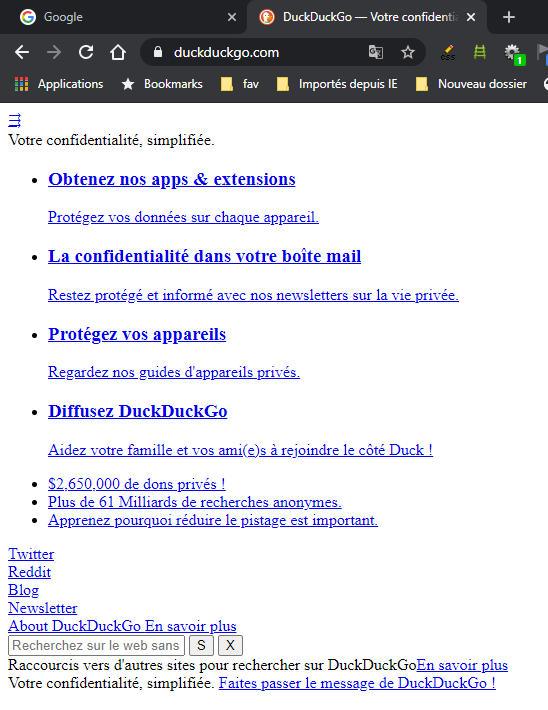

Tester en désactivant les CSS
La désactivation des CSS est un bon moyen de s'assurer du respect de certaines bonnes pratiques et de valider quelques critères importants d'accessibilité.
Pour désactiver les CSS, le plus simple est de d'installer l'extentsion "Web developer toolbar" pour FireFox ou Chrome (https://chrispederick.com/work/web-developer/). Une fois celle-ci en place, cliquer sur le menu "CSS", puis "Désactives tous les styles".
Séparer le contenu de la présentation #
Même si ce n'est qu'une bonne pratique, la séparation stricte des CSS et du HTML est importante en ce qui concerne la qualité de code et la maintenabilité de celui-ci et a parfois un impact sur l'accessibilité, en limitant les possibilités de modification du rendu visuel des pages.
En désactivant les CSS, l'affichage de la page se fait avec les styles par défaut du navigateur (lien en bleu souligné, texte en noir, fond en blanc...). Ceci permet de vérifier que le contenu n'est pas stylé par des CSS en ligne.

Ordre de lecture et contenu caché #
L'ordre d'apparition dans le code de contenu doit respecter l'ordre d'affichage visuel, si cela a un impact sur la compréhension. Le problème peut se poser du fait, entre autre, de l'utilisation de propriétés CSS de type position:,float:, display:flexbox (https://wiki.csswg.org/spec/css3-flexbox/accessibility) ou display:grid (https://webdesign.tutsplus.com/articles/a-guide-to-css-grid-and-accessibility--cms-32857). En effet, ces propriétés peuvent modifier l'ordre d'affichage de contenu.
Le contenu caché, pouvant être affiché par une action utilisateur, doit, lui aussi, s'afficher au bon endroit dans la page pour que l'ordre de lecture soit compréhensible.
En désactivant les CSS, l'affichage du contenu de la page se fait dans l'ordre d'apparition dans le code, c'est donc facile de vérifier que le contenu est compréhensible dans cet ordre.
Attention : De plus, on peut voir apparaître le contenu caché visuellement et destiné aux aides techniques (masquage accessible) et donc vérifier sa pertinence et sont utilité.
Sémantique du contenu et tableau de présentation #
Pour être accessible, le contenu d'une page doit avoir une structure sémantique qui permet de mieux en comprendre le sens.
En désactivant les CSS, l'affichage de la page se fait avec les styles par défaut du navigateur (lien en bleu souligné, texte en noir, fond en blanc...). Ceci permet de vérifier que le contenu est sémantisé avec des listes, des emphases, des paragraphes, des titres...
Et que le contenu n'est pas mis en page avec des tableaux HTML, car, dès lors, il s'affiche toujours sous forme de tableau même en désactivant CSS. Même si ce n'est pas une erreur d'accessibilité, c'est une très mauvaise pratique.
Information portée par la couleur #
L'information ne doit pas être portée que par la couleur.
En désactivant les CSS, on désactive les styles et donc les couleurs. On peut ainsi vérifier que de l'information n'est pas passée que par une couleur.
Contenu informatif généré via CSS #
Du contenu peut être généré par CSS via des pseudo-éléments (::before, ::after) ou la propriété content:. Il n'est pas conseillé de générer du contenu informatif avec de telles méthodes car leur support est mauvais pour les anciennes version d'aides techniques, donc à éviter et à tester !
Pour la propriété background-image:, le risque est d'afficher des images porteuses d'information en CSS qui seront inaccessibles aux aides techniques.
En désactivant les CSS, on désactive les règles impliquant les pseudo-éléments et on ignore la propriété content:, donc on peut identifier le contenu généré par CSS et voir s'il y perte d'information. Pour des images insérées en CSS porteuses d'informations, elles disparaîtrons sans CSS et c'est une erreur d'accessibilité à laquelle il faut être vigilant.